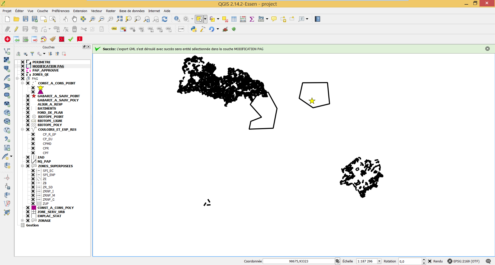
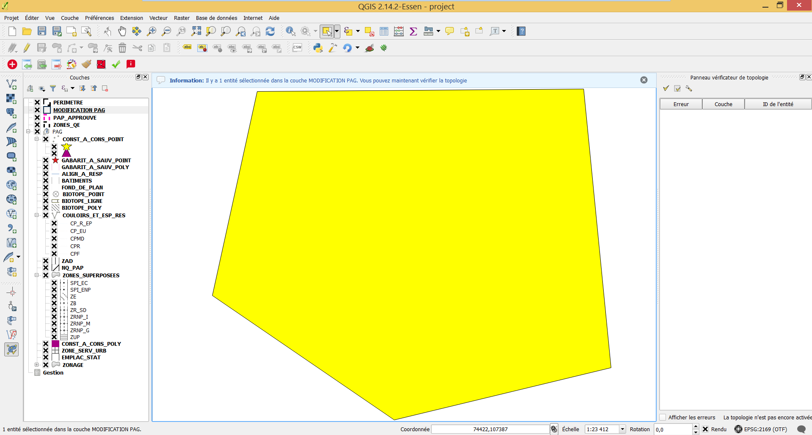

Créer un nouveau projet PAG
Créer un nouveau projet PAG
Cet outil permet de créer un projet PAG. Cliquer sur l'icône pour ouvrir la boite de dialogue.

Saisir les paramètres du nouveau projet selon les indications suivantes :
- Nom du projet
- Le nom du projet, le nom du répertoire qui va contenir les fichiers du projet
- Répertoire
- Le répertoire qui va contenir le projet
L'ouverture d'un projet PAG se fait via l'outil classique de QGIS :  . Ouvrir le fichier project.qgs du répertoire de projet.
. Ouvrir le fichier project.qgs du répertoire de projet.
Une fois le projet créé, l'interface s'affiche avec la liste des couches à gauche.
Importer des données
Cet outil permet d'importer des données depuis un fichier GML, SHP ou DXF. Cliquez sur l'outil pour ouvrir la fenêtre de sélection du fichier à importer.
La suite l'import dépend du type de fichier à importer :
Import d'un fichier GML
L'import du fichier GML est direct, sans intervention de l'utilisateur, car il est au même format qu'un projet PAG.
Une barre de progression indique l'avancement de l'import.
Un message indique la fin de l'import, et la carte zoom sur les entités importées.
Import d'un fichier SHP (Shapefile ESRI)
L'import du fichier SHP nécessite une configuration préalable, appelée mapping. Après sélection d'un fichier SHP, la fenêtre de configuration s'ouvre.

Dans la première liste déroulante, sélectionnez la couche QGIS dans laquelle importer le fichier SHP.
La seconde étape consiste soit à assigner un attribut QGIS à chaque attribut SHP, soit assigner directement une valeur constante. Lors de l'importation, le contenu de l'attribut SHP, ou la constante seront alors copiés dans l'attribut QGIS correspondant. Une fois la couche QGIS sélectionnée, la liste des attributs de cette couche (attributs QGIS) est disponible dans les différentes boites déroulantes. Si le nom de l'attribut QGIS est le même que le nom de l'attribut SHP, le plugin le proposera par défaut. Vous pouvez choisir l'attribut QGIS qui correspond à l'attribut SHP source. Il est possible de désactiver un mapping si vous ne souhaitez pas importer un attribut SHP.

La troisième étape est optionnelle et concerne les attributs QGIS rattachés à une liste de valeur.
En cliquant sur la ligne de l'attribut en question, il est possible de définir un mapping de valeurs.
Il arrive parfois que la valeur contenue dans un attribut SHP ne soit pas exactement celle attendue dans la liste de valeurs (ex. hab-1 au lieu de hab_1).
Ce mapping de valeur permet d'associer directement les valeurs SHP aux bonnes valeurs QGIS.
Cliquez sur importer.
Un message indique la fin de l'import, et la carte zoom sur les entités importées.
Import d'un fichier DXF (Autocad)
Comme l'import SHP, l'import du fichier DXF nécessite une configuration préalable, légèrement plus complexe, appelée mapping. En effet, contrairement à un fichier SHP, un calque DXF peut contenir plusieurs types de géométries. Après sélection d'un fichier DXF, la fenêtre de configuration s'ouvre.

La première étape consiste, pour chaque calque DXF, à indiquer dans quelle couche QGIS ils doivent être copiés. Il est possible de désactiver un import de calque en le décochant.

La seconde étape consiste, pour chaque mapping calque DXF -> couche QGIS, à sélectionner les constantes à insérer dans les attributs QGIS. Pour cela il faut cliquer sur le mapping à configurer dans le cadre du haut, puis saisir les valeurs dans le cadre du bas.
Une fois configuré, cliquez sur importer.
Un message indique la fin de l'import, et la carte zoom sur les entités importées.
Gestionnaire d'import
Cet outil permet d'annuler un import en cas d'erreur par exemple. Cliquer sur l'outil pour ouvrir la fenêtre.
Un tableau liste les imports effectués, on y trouve l'identifiant de l'import, la date, le nom du fichier importé et les couches importées.
Cliquer sur annuler l'import pour supprimer tous les objets rattachés à cet import sur toutes les couches.
Un message indique la fin de la suppression.
Exporter le projet en GML
Cet outil permet d'exporter le projet actuel au format GML pour transmission au Ministère de l'Intérieur. Cliquez sur l'outil pour sélectionner le fichier GML de destination.
Un message indique la fin de l'export.

Symboliser le projet
Cet outil sert à symboliser les différentes couches du projet selon la configuration fournie par le Ministère de l'Intérieur. Cliquez sur l'outil pour lancer la symbolisation.
Un message indique la fin de la symbolisation des couches.
Nettoyer la topologie
Cet outil nettoie la topologie de la couche sélectionnée en supprimant les petites surfaces (<10cm2). Sélectionnez une couche et cliquer sur l'outil
Un message indique la fin du nettoyage.
Vérifier la topologie
Cet outil lance une vérification de la topologie des données, trous entre les polygones, superposition de polygones.... Le plugin va en fait configurer le plugin de vérification topologique intégré à QGIS. Cliquez sur l'outil pour ouvrir le plugin Topology Checker.
La liste des règles peut-être visualisée en cliquant sur Configuration.
Lancer la validation en cliquant sur Valider tout.
La liste des erreurs apparait alors dans le tableau. Cliquer sur l'erreur pour zoomer dessus, vous permettant de la corriger.
Si une sélection est faite au sein de la couche 'MODIFICATION PAG', l'outil zoom automatiquement sur l'emprise des entités sélectionnées. Ceci permet de limiter la vérification topologique à l'étendue affichée, via le bouton adéquat.

Valider les données
Cet outil lance une vérification de la structure des données ainsi que des données elles-mêmes. Cliquez sur l'outil pour lancer la vérification.
Le premier cadre liste les erreurs de structure de données, type de géométrie, type d'attribut. Ce genre d'erreur ne devrait pas survenir, dans tous les cas, il faut recréer la couche pour les corriger.
Le second cadre liste les erreurs de données, valeur absente d'une liste, valeur requise, longueur maximale dépassée... Cliquer la ligne correspondante pour zoomer sur l'entité en question. Double cliquer pour l'éditer avec les outils de QGIS.